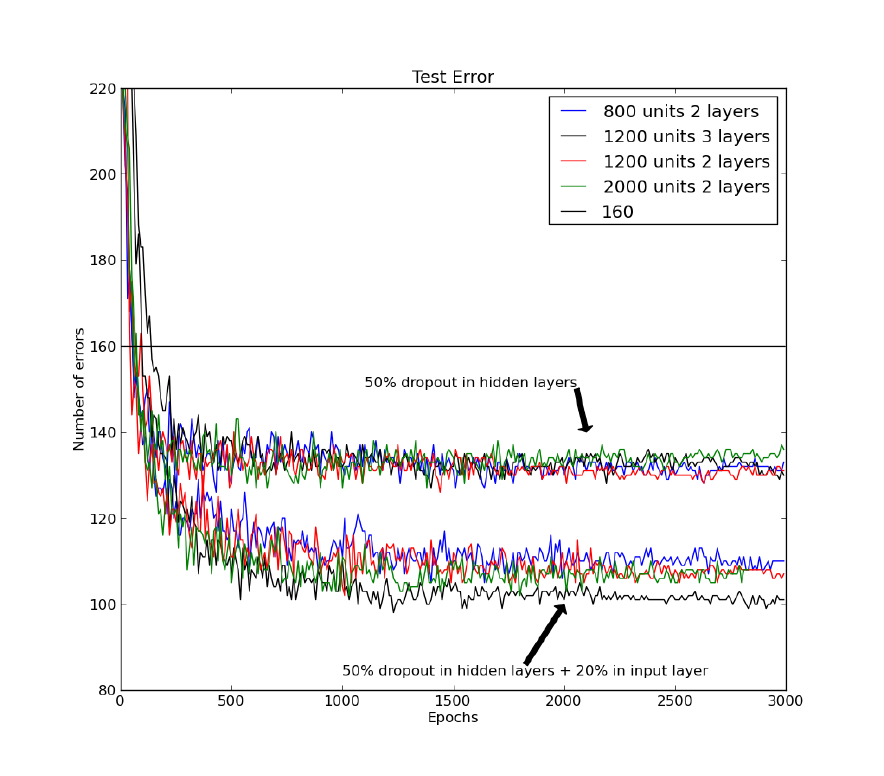
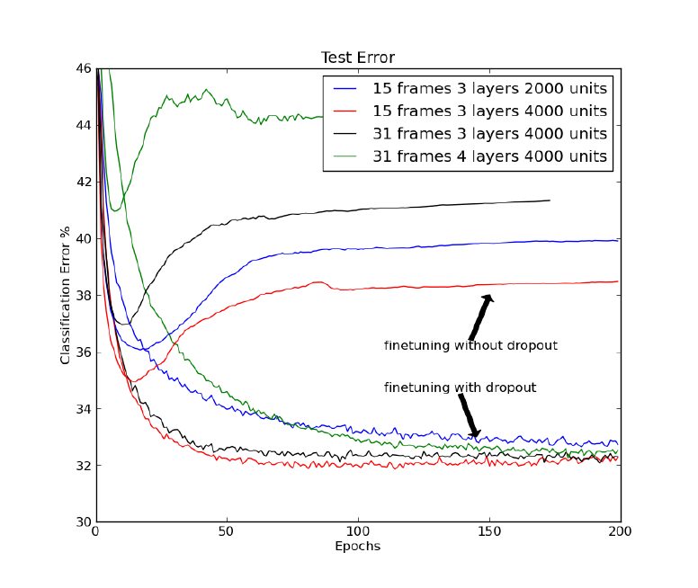
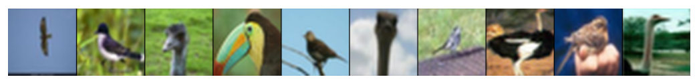
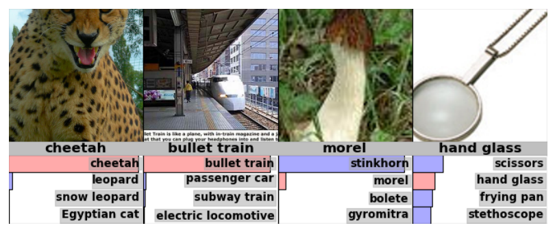
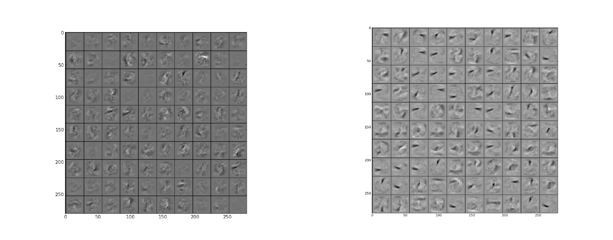
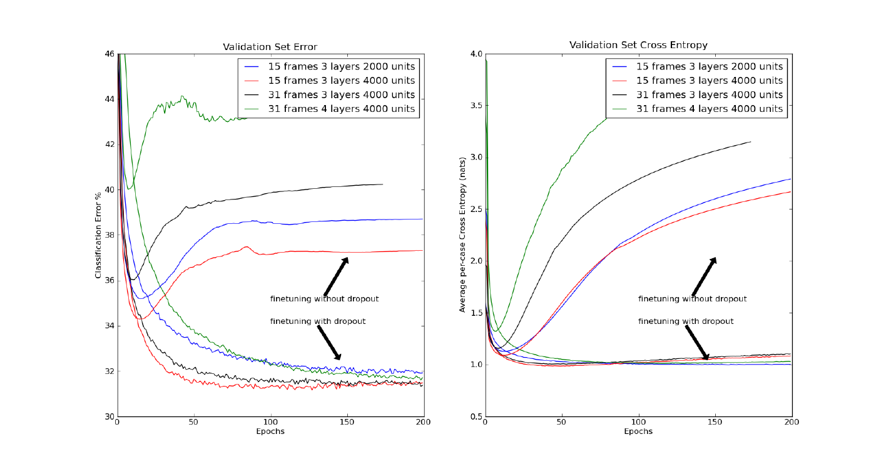
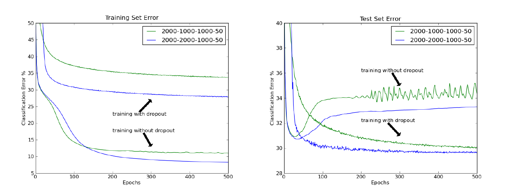

通过阻止特征检测器的共适应来改进神经网络 Improving neural networks by preventing co-adaptation of feature detectors
当用一个较小的训练集训练一个大型前馈神经网络时，它通常在留出的测试数据上表现很差。这种“过拟合”可以通过在每条训练样本上随机丢弃一半的特征检测器而大幅减轻。这样做阻止了复杂的共适应——即某个特征检测器只有在若干个特定特征检测器同时存在时才有用。取而代之，每个神经元学会去检测这样一个特征：在它必须面对的、组合上极其多样的内部语境中，该特征总体上都有助于产生正确答案。随机的“丢弃”（dropout）在许多基准任务上带来大幅改进，并在语音识别与物体识别上刷新了纪录。
正文
前馈人工神经网络在其输入与输出之间设有若干层非线性的“隐藏”单元。通过调整这些隐藏单元输入连接上的权重，网络学得一组特征检测器，从而能够在给定一个输入向量时预测出正确的输出(1)。如果输入与正确输出之间的关系很复杂，而网络又有足够多的隐藏单元来精确地建模这种关系，那么通常会存在许多组不同的权重设置，它们都能几乎完美地拟合训练集——在标注训练数据有限时尤其如此。这些权重向量各自会在留出的测试数据上给出不同的预测，而且几乎所有这些权重向量在测试数据上的表现都不如在训练数据上，因为这些特征检测器已经被调校成“在训练数据上彼此配合良好”，而在测试数据上并非如此。
过拟合可以通过“丢弃”（dropout）来减轻，其做法是阻止在训练数据上形成复杂的共适应。在每次呈现每一条训练样本时，每个隐藏单元都以 0.5 的概率被随机地从网络中移除，因此一个隐藏单元无法依赖其他隐藏单元一定在场。看待 dropout 的另一种方式是：它是一种对神经网络做模型平均的极为高效的办法。降低测试集误差的一个好办法，是把数量非常庞大的不同网络的预测结果平均起来。标准做法是分别训练许多个网络，然后把每个网络都作用到测试数据上，但这样做无论训练还是测试，计算代价都很高。随机丢弃使得在合理的时间内训练数量极其庞大的不同网络成为可能。几乎可以肯定，每一条训练样本的每一次呈现都对应着一个不同的网络，但所有这些网络在“当前在场的隐藏单元”上共享同一套权重。
我们采用标准的随机梯度下降过程，在训练样本的小批量上训练 dropout 神经网络，但我们修改了通常用来防止权重变得过大的惩罚项。我们没有去惩罚整个权重向量的平方长度（L2 范数），而是对每个单独隐藏单元的输入权重向量的 L2 范数设一个上界。如果某次权重更新违反了这个约束，我们就通过除法把该隐藏单元的权重重新归一化。用约束而不是惩罚，可以保证无论提议的权重更新有多大，权重都不会变得非常大。这使得我们可以从一个很大的学习率出发、再在学习过程中让它衰减，从而对权重空间进行比“从小权重起步、用小学习率”的方法彻底得多的搜索。
在测试阶段，我们使用“平均网络”（mean network）：它包含全部隐藏单元，但把它们的输出权重减半，以补偿测试时活跃的隐藏单元数目是训练时的两倍这一事实。实践中，这与在大量 dropout 网络上取平均的表现非常接近。对于只有一个含 N 个单元的隐藏层、并用“softmax”输出层计算类别标签概率的网络，使用平均网络恰好等价于：对所有 2N 个可能网络所预测的标签概率分布取几何平均。只要这些 dropout 网络并非全都给出完全相同的预测，平均网络的预测就保证会给正确答案赋予更高的对数概率，高于“各个 dropout 网络所赋对数概率的平均”(2)。类似地，对于使用线性输出单元的回归任务，平均网络的平方误差总是优于各 dropout 网络平方误差的平均。
我们最初用 MNIST 来考察 dropout 的效果，MNIST 是机器学习算法广泛使用的一个基准数据集。它包含 60 000 张 28×28 的手写数字训练图像和 10 000 张测试图像。通过用变换后的图像扩充训练数据(3)，或者把关于空间变换的知识“接线”进卷积神经网络(4)，或者用生成式预训练在不使用标签的情况下从训练图像中提取有用特征(5)，都可以大幅改善测试集上的表现。在不使用上述任何技巧的情况下，标准前馈神经网络已发表的最好结果是测试集上 160 个错误。若对所有隐藏单元的输入权重分别施加 L2 约束并使用 50% 的 dropout，这一数字可以降到约 130；若再对输入层随机丢弃 20% 的像素，则可进一步降到约 110（见图 1）。

dropout 也可以与生成式预训练结合使用，不过在那种情况下我们使用较小的学习率并且不加权重约束，以免破坏预训练已经发现的那些特征检测器。文献 (5) 中公开可得的预训练深度信念网络，用标准反向传播微调时得到 118 个错误，而对隐藏单元使用 50% dropout 微调时得到 92 个错误。用 URL 处公开可得的代码把一个深度玻尔兹曼机预训练五次后，展开网络在用标准反向传播微调时分别得到 103、97、94、93 和 88 个错误，而在对隐藏单元使用 50% dropout 时分别得到 83、79、78、78 和 77 个错误。79 个错误的均值，是“不使用先验知识、也不扩充训练集”这一类方法所取得的纪录（细节见附录 A）。
随后我们把 dropout 用于 TIMIT——一个被广泛使用的、针对小词汇量干净语音识别的基准。语音识别系统用隐马尔可夫模型（HMM）来处理时间上的变化，并且需要一个声学模型来判定：从声学输入中提取的一帧系数，与每个 HMM 的每个可能状态究竟有多“吻合”。近来，把一小段帧序列映射为 HMM 状态上概率分布的深度预训练前馈神经网络，被证明在 TIMIT(6) 以及多种更接近实际的大词汇量任务(7, 8)上都能胜过传统的高斯混合模型。
图 2 给出了 TIMIT 基准核心测试集上的帧分类错误率：这里把窗口的中心帧归类为神经网络赋予概率最高的那个 HMM 状态。网络的输入是相邻的 21 帧，每帧前进 10 ms。该神经网络有 4 个全连接的隐藏层、每层 4000 个单元，以及 185 个“softmax”输出单元，这些输出随后被合并为基准所使用的 39 个不同类别。对隐藏单元使用 50% 的 dropout，能显著改善多种不同网络结构的分类效果（见图 2）。为了得到帧识别率，神经网络对每一帧输出的类别概率被送入一个解码器，该解码器知道 HMM 状态之间的转移概率，并运行维特比算法来推断唯一最优的 HMM 状态序列。不使用 dropout 时识别率为 22.7%译注，使用 dropout 后提高到 19.7%，这是在不使用任何说话人身份信息的方法中所取得的纪录。

CIFAR-10 是物体识别的一个基准任务。它使用 10 个不同物体类别的 32×32 降采样彩色图像，这些图像是通过在网络上搜索类别名（例如 dog）或其子类名（例如 Golden Retriever）收集到的。这些图像经人工标注，得到 50 000 张训练图像和 10 000 张测试图像，其中每张图像都含有一个占主导、且可以被合理地赋予该类别名的物体(9)（见图 3）。在不使用变换数据的情况下，已发表的测试集最好错误率是 18.5%(10)。我们使用一个“三层卷积隐藏层与三层 max-pooling 层交替”的神经网络（max-pooling 层报告卷积单元局部池中的最大激活值），取得了 16.6% 的错误率。这六层之后接一个局部连接层（细节见附录 D）。在最后一个隐藏层中使用 dropout，错误率降到 15.6%。
ImageNet 是一个极具挑战性的物体识别数据集，由数千个物体类别的数千张高分辨率图像构成(11)。2010 年，其中一个包含 1000 个类别、每类约 1000 个样本的子集成为一项物体识别竞赛的基础，获胜方案（实际上是六个独立模型的平均）在测试集上取得了 47.2% 的错误率。该数据集上当时的最好结果是 45.7%(12)。我们用一个单独的神经网络取得了与之相当的 48.6% 错误率：该网络有五个卷积隐藏层与 max-pooling 层交替，其后接两个全局连接层和一个最终的 1000 路 softmax 层。所有层都对每个隐藏单元的输入权重施加了 L2 权重约束。在第六个隐藏层中使用 50% 的 dropout，把错误率降到创纪录的 42.4%（细节见附录 E）。

对于语音识别数据集以及两个物体识别数据集，在设计网络结构时都必须做出大量决策。我们做出这些决策的办法是：留出一个单独的验证集，用它来评估大量不同结构的表现；然后选用在验证集上配合 dropout 表现最好的那个结构，去评估 dropout 在真正的测试集上的表现。
Reuters 数据集包含被标注了类别层次体系的文档。我们构造了各含 201 369 篇文档的训练集和测试集，涵盖 50 个互斥类别。每篇文档用一个包含 2000 个常见非停用词计数的向量表示，每个计数值 C 被变换为 log(1 + C)。一个含两个 2000 单元全连接隐藏层、用反向传播训练的前馈神经网络在测试集上得到 31.05% 的错误率。使用 50% 的 dropout 后降到 29.62%（附录 C）。
我们尝试过各种 dropout 概率，几乎所有的概率都能改善网络的泛化性能。对全连接层而言，在所有隐藏层都使用 dropout 比只在某一个隐藏层使用更好；而过于极端的概率往往更差，这也是我们在本文中一律使用 0.5 的原因。对输入而言，dropout 也有帮助，不过通常保留 50% 以上的输入会更好。还可以通过比较“某单元在场时”与“平均情形下”在验证集上的平均表现，来为每个隐藏单元或输入单元自适应地设定其各自的 dropout 概率；这会让方法的表现略有提升。对于“所需的输入—输出映射包含若干相当不同的模式”的数据集，把 dropout 概率做成输入的、可学习的函数，很可能还能进一步提升表现，从而构造出一个统计上更高效的“专家混合”(13)：其中专家的数目在组合上极多，但每个参数都在相当大一部分训练数据上得到调整。

dropout 的实现比贝叶斯模型平均要简单得多；后者按照给定训练数据下各模型的后验概率来加权。对于像前馈神经网络这样复杂的模型类，贝叶斯方法通常要用马尔可夫链蒙特卡洛方法从后验分布中采样模型(14)。相比之下，概率为 0.5 的 dropout 假定所有模型最终在组合中权重相同，而共享权重的学习过程会把这件事实考虑进去。在测试阶段，各个单元的丢弃决策相互独立，这一事实使得“用一次前向通过平均网络”来近似指数多个 dropout 网络的综合意见变得非常容易。这比把许多独立模型的预测平均起来要高效得多。
贝叶斯模型平均的一个常见替代方案是“bagging”：在不同的训练样本随机子集上训练不同的模型，并在组合中给所有模型相同的权重(15)。bagging 最常用在决策树这类模型上，因为这类模型拟合数据快、测试也快(16)。dropout 使得类似的做法可以应用到前馈神经网络这种强大得多的模型上。可以把 dropout 看成 bagging 的一种极端形式：每个模型只用一条样本训练，而模型的每个参数都通过与所有其他模型中对应参数共享而受到极强的正则化。这比“把参数向零收缩”的标准方法是一个好得多的正则化器。
dropout 的一个我们熟悉的极端情形是“朴素贝叶斯”：每个输入特征各自单独训练来预测类别标签，然后在测试时把所有特征的预测分布乘起来。当训练数据非常少时，这往往比逻辑斯特分类（训练每个输入特征在所有其他特征的情境下都好用）表现得好得多。
最后，dropout 与近来一个关于“性在演化中的作用”的理论之间有一种耐人寻味的相似(17)。对文献 (17) 中阐述的“可混合性”理论的一种可能解读是：性打散了共同适应的基因集合，这意味着“依靠一大组共同适应的基因来实现某个功能”远不如“用多种彼此不同的方式来实现同一功能（哪怕实现得不那么最优）、而每种方式只用到少量共同适应的基因”来得稳健。这使演化能够避免陷入“适应度的提升需要一大群共同适应的基因协同改变”这样的死胡同。它也降低了环境的小变化导致适应度大幅下降的概率——这一现象在机器学习领域被称作“过拟合”。
参考文献与注释（References and Notes）
按约定，参考文献保留原文、不作翻译，以便检索与引用。
- D. E. Rumelhart, G. E. Hinton, R. J. Williams, Nature 323, 533 (1986).
- G. E. Hinton, Neural Computation 14, 1771 (2002).
- L. M. G. D. C. Ciresan, U. Meier, J. Schmidhuber, Neural Computation 22, 3207 (2010).
- Y. B. Y. Lecun, L. Bottou, P. Haffner, Proceedings of the IEEE 86, 2278 (1998).
- G. E. Hinton, R. Salakhutdinov, Science 313, 504 (2006).
- A. Mohamed, G. Dahl, G. Hinton, IEEE Transactions on Audio, Speech, and Language Processing, 20, 14 (2012).
- G. Dahl, D. Yu, L. Deng, A. Acero, IEEE Transactions on Audio, Speech, and Language Processing, 20, 30 (2012).
- N. Jaitly, P. Nguyen, A. Senior, V. Vanhoucke, An Application OF Pretrained Deep Neural Networks To Large Vocabulary Conversational Speech Recognition, Tech. Rep. 001, Department of Computer Science, University of Toronto (2012).
- A. Krizhevsky, Learning multiple layers of features from tiny images, Tech. Rep. 001, Department of Computer Science, University of Toronto (2009).
- A. Coates, A. Y. Ng, ICML (2011), pp. 921–928.
- J. Deng, et al., CVPR09 (2009).
- J. Sanchez, F. Perronnin, CVPR11 (2011).
- S. J. N. R. A. Jacobs, M. I. Jordan, G. E. Hinton, Neural Computation 3, 79 (1991).
- R. M. Neal, Bayesian Learning for Neural Networks, Lecture Notes in Statistics No. 118 (Springer-Verlag, New York, 1996).
- L. Breiman, Machine Learning 24, 123 (1996).
- L. Breiman, Machine Learning 45, 5 (2001).
- J. D. A. Livnat, C. Papadimitriou, M. W. Feldman, PNAS 105, 19803 (2008).
- R. R. Salakhutdinov, G. E. Hinton, Artificial Intelligence and Statistics (2009).
- D. D. Lewis, T. G. R. Y. Yang, Journal of Machine Learning 5, 361 (2004). 译注
- We thank N. Jaitly for help with TIMIT, H. Larochelle, R. Neal, K. Swersky and C.K.I. Williams for helpful discussions, and NSERC, Google and Microsoft Research for funding. GEH and RRS are members of the Canadian Institute for Advanced Research.
附录 A MNIST 上的实验
A.1 dropout 训练细节
MNIST 数据集由 28×28 的数字图像构成——60 000 张用于训练、10 000 张用于测试。任务目标是把数字图像分类到正确的数字类别。我们试验了不同结构（不同数量的隐藏单元与层数）的神经网络，以评估 dropout 方法对这些选择的敏感性。我们给出 4 个网络的结果（784-800-800-10、784-1200-1200-10、784-2000-2000-10、784-1200-1200-1200-10）。对这些结构我们使用相同的 dropout 率——所有隐藏单元 50%、可见单元 20%。我们使用小批量为 100 的随机梯度下降和交叉熵目标函数。学习率指数衰减，初值为 10.0（作用于每个小批量上的平均梯度）。每训练一轮（epoch），学习率乘以 0.998。每个隐藏单元对应的输入权重向量被约束为平方长度不超过 l。如果由于一次更新使平方长度超过 l，就把该向量按比例缩小，使其平方长度为 l。通过交叉验证，我们发现 l = 15 效果最好。权重初始化为从零均值、标准差 0.01 的正态分布中抽取的小随机值。使用动量来加速学习。动量从 0.5 开始，在最初的 500 轮中线性增加到 0.99，此后保持为 0.99。另外，学习率还乘以因子 (1 − 动量)。不使用权重衰减。权重在每个小批量结束时更新。训练进行 3000 轮。权重更新采取如下形式：
wt = wt−1 + Δwt
其中，
pt = {t/T · pi + (1 − t/T) · pf, t < T
pf, t ≥ T
且 ε0 = 10.0，f = 0.998，pi = 0.5，pf = 0.99，T = 500。虽然使用常数学习率也比标准反向传播有改进，但从高学习率开始并让它衰减带来了显著的表现提升。把输入向量约束为固定长度，可以防止权重的幅值任意增长，无论学习率如何。这给了网络大量机会在权重空间中搜索一个好的配置。随着学习率衰减，算法能够迈出更小的步子，并找到可以让学习取得进展的合适步长。使用较高的最终动量，把梯度信息分摊到大量更新上，从而在“每次梯度计算针对的都是一个不同的随机网络”这一情形下使学习保持稳定。
A.2 dropout 微调细节
除了从随机权重开始训练神经网络之外，dropout 还可用于微调预训练模型。我们发现，用较小的学习率配合 dropout 微调一个模型，可以得到比标准反向传播微调好得多的表现。
深度信念网络（Deep Belief Nets）——我们取一个用深度信念网络预训练好的神经网络(5)。它的结构是 784-500-500-2000，并用贪心的逐层对比散度学习训练①。我们没有用通常的反向传播算法去微调它，而是用了它的 dropout 版本。dropout 率与之前相同：隐藏单元 50%、可见单元 20%。使用了恒定的较小学习率 1.0。对输入权重向量的长度不加约束。不使用权重衰减。所有其他超参数与之前相同。模型用小批量为 100 的随机梯度下降训练 1000 轮。标准反向传播大约给出 118 个错误，而 dropout 把错误降到约 92。
深度玻尔兹曼机（Deep Boltzmann Machines）——我们还取了一个预训练好的深度玻尔兹曼机(18)②（784-500-1000-10），并用 dropout-反向传播对它微调。该模型使用 1784-500-1000-10 的结构（多出的 1000 个输入单元来自该 DBM 第二层隐藏单元的均值场激活，细节见文献 (18)）。所有微调超参数都与用于深度信念网络的那些相同。配用 dropout 我们得到了约 79 个错误的均值，而通常的微调给出约 94 个错误。
原文脚注：
① For code see http://www.cs.toronto.edu/~hinton/MatlabForSciencePaper.html
② For code see http://www.utstat.toronto.edu/~rsalakhu/DBM.html
A.3 对特征的影响
dropout 相对反向传播之所以带来大幅改进，原因之一是它鼓励每个单独的隐藏单元去学习一个有意义的特征，而不依赖特定的其他隐藏单元来纠正它的错误。为了验证这一点、并更好地理解 dropout 对特征学习的影响，我们考察了一个 784-500-500 神经网络在没有任何生成式预训练的情况下所学到的第一层特征。这些特征展示在图 5 中。每个面板显示每个网络学到的 100 个随机特征。dropout 学到的特征更简单，看起来像“笔画”，而标准反向传播学到的特征难以解释。这证实了 dropout 确实迫使判别式模型去学习更好的、共适应程度更低的特征，从而带来更好的泛化。

附录 B TIMIT 上的实验
TIMIT 声学—音素连续语音语料库是评估自动语音识别系统的标准数据集。它包含 630 位说话人朗读的录音，覆盖美式英语的 8 种方言，每人朗读 10 个音素丰富的句子。它同时带有词级和音素级的转写。任务目标是把给定的语音信号转换为音素转写序列。这些数据需要预处理，以提取输入特征和输出目标。我们使用 Kaldi——一个开源的语音代码库③——来预处理数据集，以便我们的结果可以被精确复现。我们网络的输入是对数滤波器组响应。它们是在 25 ms 的语音窗上、以 10 ms 的步长提取的。
输入表示的每一维都被归一化为均值 0、方差 1。预训练和 dropout 微调都使用大小为 100 的小批量。我们通过改变输入帧数（15 和 31）、神经网络层数（3、4 和 5）以及每层隐藏单元数（2000 和 4000），尝试了若干网络结构。图 6 展示了其中若干组合的验证误差曲线。使用 dropout 始终带来更低的错误率。
B.1 预训练
在 TIMIT 上的所有实验中，我们都用深度信念网络预训练神经网络(5)。由于输入是实值的，第一层被作为高斯 RBM 预训练。

可见单元的偏置初始化为零，权重初始化为从零均值、标准差 0.01 的正态分布中采样的随机数。每个可见单元的方差设为 1.0，且不学习。学习通过最小化对比散度完成。使用动量来加速学习。动量从 0.5 开始，在 20 轮内线性增加到 0.9。对平均梯度使用 0.001 的学习率（然后再乘以 1 − 动量）。使用 0.001 的 L2 权重衰减。模型训练 100 轮。
所有后续层都作为二值 RBM 训练。学习率为 0.01。每个单元的可见偏置初始化为 log(p/(1−p))，其中 p 是该单元在数据集中的平均激活。所有其他超参数都与我们对高斯 RBM 所用的相同。每层训练 50 轮。
B.2 dropout 微调
预训练好的 RBM 被用来初始化神经网络中的权重。然后用 dropout-反向传播对该网络进行微调。动量在 10 轮内从 0.5 线性增加到 0.9。使用一个较小的恒定学习率 1.0（作用于一个小批量上的平均梯度）。所有其他超参数与 MNIST 的 dropout 微调相同。模型需要运行约 200 轮才能收敛。同一个网络也用标准反向传播、以更小的学习率 0.1 微调，其余所有超参数保持不变。
图 6 展示了训练集与验证集上的帧分类误差和交叉熵目标值。我们在若干网络结构和输入表示上比较 dropout 与标准反向传播的表现。dropout 始终取得更低的误差和交叉熵。它显著地控制了过拟合，使方法对网络结构的选择变得稳健。它使得训练大得多的网络成为可能，并且免除了早停的需要。我们还观察到，模型最终得到的误差对学习率和动量的选择并不很敏感。
原文脚注：
③ http://kaldi.sourceforge.net
附录 C Reuters 上的实验
路透社语料库第一卷（Reuters Corpus Volume I, RCV1-v2）(19) 收录了 804 414 篇新闻稿，这些新闻稿被人工归类到 103 个主题中④。该语料库覆盖四大类：企业/工业、经济、政府/社会以及市场。主题示例包括能源市场、账目/盈利、政府借贷、灾害与事故、银行间市场、法律/司法、生产/服务等。主题类别构成一棵通常深度为三的树。
我们取用该数据集，并按类别树第二层的 63 个类别把它划分为 63 个类。我们去掉了 11 个没有任何数据的类别，以及一个只有 4 条训练样本的类别。我们还去掉了一个覆盖了很大一部分（25%）样本的类别。这样剩下 50 个类别、402 738 篇文档。我们把文档随机划分为大小相等的训练集与测试集。每篇文档用数据集中出现最频繁的 2000 个非停用词表示。

我们用 dropout-反向传播训练了一个神经网络，并与标准反向传播比较。我们使用 2000-2000-1000-50 的结构。训练超参数与 MNIST 的 dropout 训练相同（附录 A.1）。训练进行 500 轮。
图 7 展示了随着学习推进，训练集与测试集的误差。我们给出两个网络——一个是 2000-2000-1000-50，另一个是 2000-1000-1000-50，各自在有/无 dropout 下训练。与前面讨论的所有数据集一样，我们在这里也获得了显著的改进。这种学习不仅带来更好的泛化，而且进行得平稳，无需早停。
原文脚注：
④ The corpus is available at http://www.ai.mit.edu/projects/jmlr/papers/volume5/lewis04a/lyrl2004_rcv1v2_README.htm
附录 D Tiny Images 与 CIFAR-10
Tiny Images 数据集包含 8000 万张从网络上收集的 32×32 彩色图像。这些图像是通过在各种图像搜索引擎中检索英语名词找到的，因此每张图像都带有一个非常不可靠的标签，即用来找到它的那个名词。CIFAR-10 数据集是 Tiny Images 数据集的一个子集，包含 60 000 张图像、分属十个类别⑤。每个类别包含 5000 张训练图像和 1000 张测试图像。这些类别是：飞机、汽车、鸟、猫、鹿、狗、蛙、马、船、卡车。CIFAR-10 数据集是通过过滤 Tiny Images 数据集、去除标签不正确的图像而得到的。CIFAR-10 图像变化极大，没有物体出现的标准视点或尺度。纳入一张图像的唯一标准是：该图像包含 CIFAR-10 某个类别的一个占主导的实例，并且图像中的物体能够被容易地识别为图像标签所指的类别。
原文脚注：
⑤ The CIFAR dataset is available at http://www.cs.toronto.edu/~kriz/cifar.html.
附录 E ImageNet
ImageNet 是一个包含数千个类别、数百万张带标签图像的数据集。图像从网络上收集，并由人工标注者使用亚马逊的 Mechanical Turk 众包工具标注。2010 年，1000 个类别中每类约 1000 张图像构成的子集成为一项物体识别竞赛的基础，该竞赛是 Pascal 视觉物体挑战赛的一部分。我们进行实验所用的正是这个版本的 ImageNet。总共有约 130 万张训练图像、50 000 张验证图像和 150 000 张测试图像。这个数据集在思路上与 CIFAR-10 相似，但规模大得多。图像是全分辨率的，类别有 1000 个而非十个。另一个区别是，ImageNet 图像常常包含多个 ImageNet 物体的实例，这仅仅是因为物体类别数量极其庞大。因此，即使对人来说，在这个数据集上接近完美准确率也很困难。实验中我们把所有图像缩放为 256×256 像素。
附录 F 卷积神经网络
我们用于 CIFAR-10 和 ImageNet 的模型是深层前馈卷积神经网络（CNN）。前馈神经网络是由若干层“神经元”构成的模型，其中给定层中的每个神经元对上一层神经元输出施加一个线性滤波器。通常会给滤波器输出加上一个标量偏置，并对结果施加一个非线性激活函数，然后把神经元的输出传给下一层。线性滤波器与偏置被称为权重，它们是网络从训练数据中学习到的参数。
CNN 与普通神经网络在几个方面不同。第一，CNN 中的神经元在地形上被组织成一个“组”（bank），这种组织反映了输入数据中各维度的排布。所以就图像而言，神经元被排布在二维网格上。第二，CNN 中的神经元所施加的滤波器在范围上是局部的，并且以该神经元在地形组织中的位置为中心。对于“输入各维度之间的依赖随距离递减”的数据集来说，这是合理的——自然图像的像素正是如此。特别地，我们预期：关于输入图像中物体身份的有用线索，可以通过考察图像的小块局部邻域找到。第三，一个组中的所有神经元施加同一个滤波器，但正如刚才所说，它们在输入图像的不同位置上施加。这对具有近似平稳统计特性的数据集（例如自然图像）是合理的。我们预期同类的结构可以出现在输入图像的所有位置，因此对所有位置一视同仁、用同样的方式去滤波是合理的。这样一来，CNN 中的一个神经元组就对其输入施加了一次卷积操作。CNN 中的一层通常有多个神经元组，每组用不同的滤波器做一次卷积。这些神经元组成为下一层的不同输入通道。一个卷积组中相邻神经元感受野边界之间以像素计的距离，决定了卷积操作施加的步长（stride）。步长越大，每组中的神经元越少。除非另有说明，我们的模型使用一个像素的步长。
这种卷积式“共享滤波器”结构的一个重要后果是：与“所有神经元都施加不同滤波器”的神经网络相比，参数数量大幅减少。这降低了网络的表示能力，但也降低了它过拟合的能力，因此 dropout 在卷积层中远没有那么有优势。
F.1 池化
CNN 通常还具有“池化”（pooling）层，它们对卷积层中局部小块神经元的活动做概括。本质上，池化层以卷积层的输出为输入，并对其进行下采样。池化层由若干池化单元构成，这些单元在地形上排布，并与同一个组中卷积单元输出的一个局部邻域相连。每个池化单元随后对该组在这个邻域中的输出计算某个函数。典型的函数是最大值和平均值。具有这类单元的池化层分别被称为最大池化层和平均池化层。池化单元通常至少相隔若干像素，因此池化单元的总数少于上一层卷积单元输出的数量。把这个间距做得小于池化单元所概括邻域的大小，就产生了重叠池化。这种变体使池化层产生卷积单元输出的一种粗编码，我们在实验中发现这有助于泛化。我们把这个间距称为池化单元之间的步长，与卷积单元之间的步长类比。池化层为网络引入了一定程度的局部平移不变性，从而改善泛化。它们相当于哺乳动物视觉皮层中的复杂细胞，后者汇集多个简单细胞的活动。已知这类细胞表现出类似的相位不变性。
F.2 局部响应归一化
我们的网络还包含响应归一化层。这类层鼓励属于不同组的神经元之间为“取得大的激活值”而竞争。具体而言，位于地形组织中位置 (x, y)、属于组 i 的神经元，其活动 aix,y 被除以
其中求和遍历位于地形组织同一位置上的 N 个“相邻”神经元组。组的排序当然是任意的，并在训练开始前确定。响应归一化层实现了真实神经元中发现的一种侧抑制形式。常数 N、α、β 是超参数，其取值通过验证集确定。
F.3 神经元非线性
我们网络中的所有神经元都使用“与零取最大”的非线性。也就是说，它们的输出按 aix,y = max(0, zix,y) 计算，其中 zix,y 是该神经元的总输入（等价地说，是该神经元线性滤波器的输出加上偏置）。与传统的饱和型神经元模型相比，这种非线性有几个优点，其中包括显著缩短达到给定错误率所需的训练时间。这种非线性还降低了对对比度归一化及类似数据预处理方案的需求，因为使用这种非线性的神经元不会饱和——当面对异常大的输入值时，它们的活动只是相应地按比例增大。因此，我们唯一采取的数据预处理步骤是：从每个像素中减去平均活动，使数据居中。所以我们是在像素的（居中后的）原始 RGB 值上训练网络。
F.4 目标函数
我们的网络最大化多项逻辑斯特回归目标，这等价于最小化训练样本上“真实标签分布与模型预测标签分布之间交叉熵”的平均值。
F.5 权重初始化
我们用零均值正态分布初始化模型中的权重，方差设得足够大，以便为每层神经元产生正的输入。在使用“与零取最大”非线性时，这是一个稍显微妙的问题。如果某个神经元的输入总是负的，就不会发生任何学习，因为它的输出将恒为零，其输出关于输入的导数也将恒为零。因此，重要的是从方差足够大的分布初始化权重，使得所有神经元都至少偶尔能得到正的输入。实践中，我们只是尝试不同的方差，直到找到一个可行的初始化。通常只需要试几次。我们还发现，出于同样的原因，用某个正常数（在我们的情形中是 1）初始化隐藏层神经元的偏置，有助于让学习启动起来。
F.6 训练
我们用随机梯度下降训练模型，批量大小为 128 个样本，动量为 0.9。因此权重 w 的更新规则为
wi+1 = wi + vi+1
其中 i 是迭代下标，v 是动量变量，ε 是学习率，而 ⟨∂E/∂wi⟩i 是目标关于 wi 的导数在第 i 个批次上的平均。我们使用公开可得的 cuda-convnet 软件包，在单块 NVIDIA GTX 580 GPU 上训练所有模型。CIFAR-10 上的训练大约需要 90 分钟。ImageNet 上的训练用 dropout 大约需要四天，不用 dropout 大约需要两天。
F.7 学习率
我们对每一层使用相同的学习率，其取值我们用启发式方法确定为“能使目标函数下降的十的最大幂”。实践中它通常是 10−2 或 10−3 量级。在训练终止前不久，我们把学习率两次降低为原来的十分之一。
附录 G CIFAR-10 的模型
我们不使用 dropout 的 CIFAR-10 模型是一个含三个卷积层的 CNN。三层之后都接池化层。所有池化层概括 3×3 的邻域并使用步长 2。第一个卷积层之后的池化层做最大池化，其余池化层做平均池化。响应归一化层接在前两个池化层之后，取 N = 9、α = 0.001、β = 0.75。最上面的池化层连接到一个含十个单元的 softmax 层，该层输出类别标签上的概率分布。所有卷积层都有 64 个滤波器组，使用 5×5 的滤波器大小（乘以前一层的通道数）。
我们使用 dropout 的 CIFAR-10 模型类似，但因为 dropout 对网络施加了很强的正则化，我们能够使用更多参数。因此我们增加第四个权重层，它从第三个池化层取输入。这个权重层是局部连接的，但不是卷积的。它类似于一个卷积层，只不过同一组中的滤波器不共享权重。这一层包含 16 个大小为 3×3 的滤波器组。我们就是在这层使用 50% 的 dropout。softmax 层从这第四个权重层取输入。
附录 H ImageNet 的模型
我们使用 dropout 的 ImageNet 模型是一个 CNN，它在从 256×256 图像中随机抽取的 224×224 图块及其水平镜像上训练。这是一种数据增强形式，降低网络过拟合训练数据的能力，有助于泛化。该网络包含七个权重层。前五个是卷积层，后两个是全局连接层。最大池化层接在第一个、第二个和第五个卷积层之后。所有池化层概括 3×3 的邻域并使用步长 2。响应归一化层接在第一个和第二个池化层之后。第一个卷积层有 64 个滤波器组，滤波器为 11×11，并以 4 个像素的步长施加（这是组中相邻神经元之间的距离）。第二个卷积层有 256 个滤波器组，滤波器为 5×5。这一层有两个输入。第一个输入是第一个卷积层的（池化并响应归一化后的）输出。这一层中的 256 个组被任意划分为每组 64 个，每一组连接到第一个卷积层中一个唯一的随机 16 通道子集。第二个输入是原始图像的一个下采样版本（56×56），由这一层以 2 个像素的步长滤波。对两个输入分别滤波得到的两张特征图逐元素相加（它们的维度完全相同），再按通常方式对和施加“与零取最大”的非线性。第三个、第四个和第五个卷积层彼此相连，中间没有任何池化或归一化层，但每层在线性滤波之后都施加“与零取最大”的非线性。第三个卷积层有 512 个滤波器组，划分为每组 32 个，每一组连接到由第二个卷积层的（池化、归一化后的）输出所产生的、一个唯一的随机 32 通道子集。第四个和第五个卷积层同样有 512 个滤波器组，划分为每组 32 个，每一组连接到由下一层产生的、一个唯一的随机 32 通道子集。接下来的两个权重层是全局连接的，各有 4096 个神经元。在这最后两层中我们使用 50% 的 dropout。最后，最后一个全局连接层的输出被送入一个 1000 路 softmax，产生 1000 个类别标签上的分布。我们通过在 256×256 输入图像的十个 224×224 图块（中心图块、四个角图块及其水平镜像）上平均网络的预测来测试模型。尽管在测试时对每张图像做了十次前向计算，我们仍能实时运行系统。
我们不使用 dropout 的 ImageNet 模型类似，但没有那两个全局连接层——在不使用 dropout 的情况下，它们会造成严重的过拟合。
为了在验证集上达到当时的最好表现，我们发现必须使用上面描述的这种非常复杂的网络结构。所幸，这个结构的复杂性并不是本文的重点。我们想要展示的是：即使对于那些由许多团队多年共同努力、为把物体识别做到极好而发展出来的非常复杂的神经网络，dropout 也有显著的帮助。这一点清楚地体现在：使用带大量参数的非卷积高层的做法，配用 dropout 时带来大幅改进，而不用 dropout 时反而使情况变糟。
图表索引
本页由 Zotero 库中的 PDF 原文与 MinerU 解析结果翻译整理而成。图片为从源 PDF 中裁取的原始插图，存于同目录下 images/。参考文献与原文脚注保留原文，未作翻译。